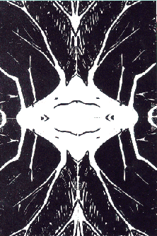

Josh

Pierre de Kerangal Computer Graphics Image, New York City
4/5/96
"I am a Tree" song by Sara, age 11, Canada 4/4/96
2 New Images from Josh, New Jersey
4 Computer Graphics Images from Marilee, Western Oregon, USA 11/17/97
4 Computer Graphics Images from Emine Sarsilmaz, Turkey 11/6/99
Return to Main Page
Please send e-mail to: June Julian, jj68@nyu.edu